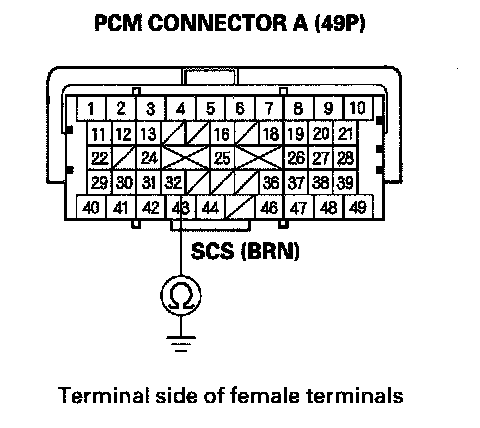

Malfunction Indicator Lamp: Testing and Inspection
MIL Circuit Troubleshooting1. Turn the ignition switch ON (II).
2. Do the gauge self-diagnostic function.
Does the MIL indicator flash?
YES - Go to step 3.
NO - Substitute a known-good gauge control module, and recheck. If the MIL circuit is OK, replace the original gauge control module.
3. Connect the HDS to the DLC.
4. Check the SCS in the DATA LIST with the HDS.
Is a short indicated?
YES - Go to step 5.
NO - Update the PCM if it does not have the latest software, or substitute a known-good PCM, then recheck. If the symptom/indication goes away with a known-good PCM, replace the original PCM.
5. Turn the ignition switch OFF.
6. Disconnect PCM connector A (49P), then disconnect the HDS.

7. Check for continuity between PCM connector terminal A32 and body ground.
Is there continuity?
YES - Repair short in the wire between the PCM (A32) and the SRS unit, the DLC.
NO - Update the PCM if it does not have the latest software, or substitute a known-good PCM, then recheck. If the symptom/indication goes away with a known-good PCM, replace the original PCM.